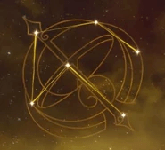
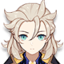
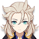

Ninguang conocida como "Equilibrio Celestial", es miembro de las "Siete Estrellas de Liyue". Su riqueza es insuperable en todo Teyvat.
Artefacto/s recomendados


Atq%

Bono Geo

Daño / Prob critico
prob critico > daño critico > Atq%
Talentos

Pasivas
Constelacion
Armas Recomendadas


Personajes compatibles

 
